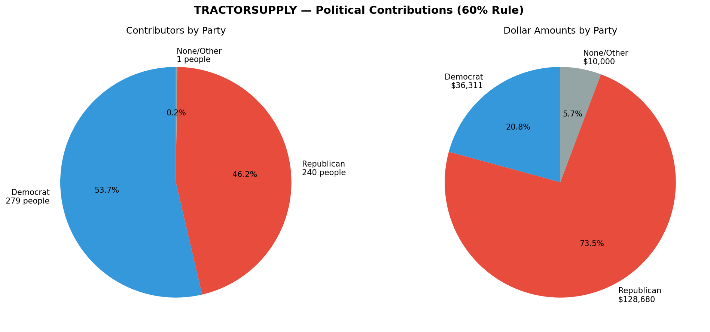

FEC Contribution Analysis · TRACTOR SUPPLY
Fetches political contribution records from the OpenFEC API, aggregates by contributor using the 60% rule (assign a party if ≥60% of a person's total went to that party), and visualizes the breakdown.
📓
Notebooks
1 notebook — full executed analyses with charts, data joins, and the 60% contributor classification rule.
📂
Data
Browse and download raw API output: Schedule A CSVs and JSON files.
🔍
Source
Syntax-highlighted Python source and Justfile build recipes.
Companies
1
TRACTOR SUPPLY
Contributions
200
Total API records across all fetches
Total Amount
$14,088
Sum of all contribution amounts
States
23
Contributor states represented
Results

Pipeline
just build # fetch → analyze → notebook + site
↳ api-demo.py fetches OpenFEC Schedule A for any employer
↳ main.py joins party lookups (AllPacs, Aristotle), applies 60% rule
↳ notebooks/*.ipynb execute and render to HTML
↳ output/charts/ and output/schedule_a/ written to disk